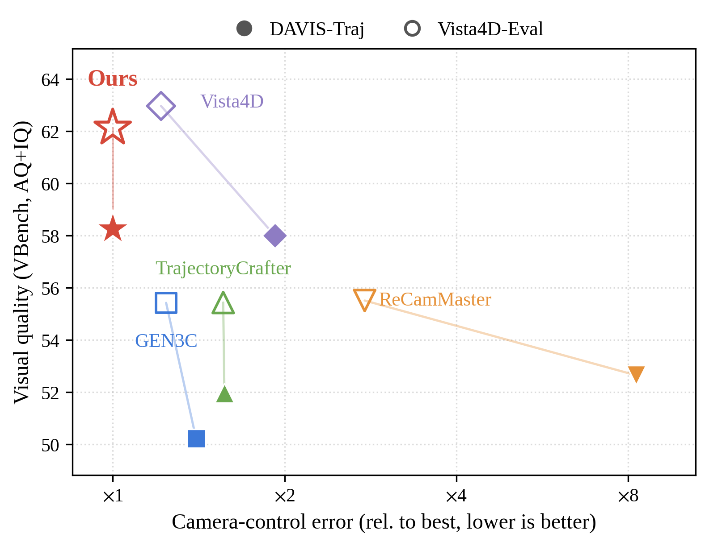
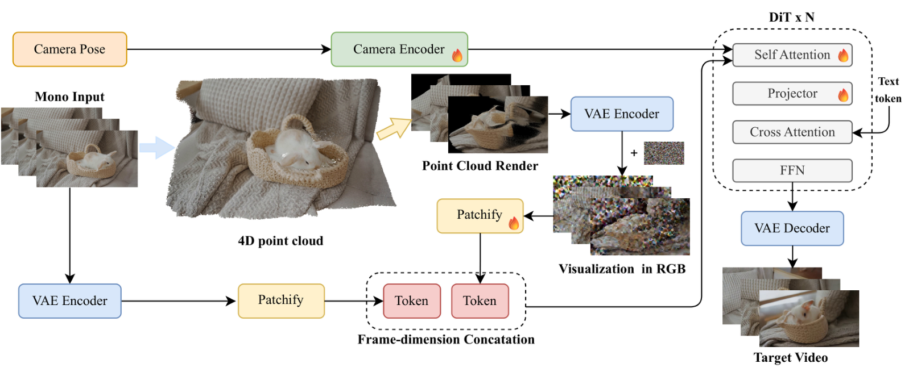

Re-shoot a monocular video along any camera trajectory — by trusting the point cloud render exactly once, as the starting point of generation, instead of conditioning on it at every denoising step.
Video re-shooting re-renders a monocular video of a dynamic scene along a user-specified camera trajectory. The dominant recipe supplies the target geometry explicitly: per-frame depth lifts the source video into a 4D point cloud, which is rasterized along the trajectory into a point cloud render. Because the render and the source video are both handed to the network as visual conditions, they compete at every denoising step, leaving the model with a trust dilemma — how much of the render to believe — that is resolved only by learning from data, and therefore offers no guarantee at motion magnitudes beyond the training distribution.
We argue that a render already pixel-aligned with the target view does not need to be supplied as an explicit conditioning stream at all. Manifold4D mixes the render directly into the initial noise of flow matching, weighted per token by rasterization coverage, so that generation no longer departs from the Gaussian prior but from a point cloud rendered manifold, leaving the source video as the only visual condition. The render is thus trusted exactly once, and the network is never asked to learn how to read it.
On our DAVIS-Traj benchmark and on the Vista4D evaluation set, Manifold4D attains the best camera-control accuracy on every metric, while matching the strongest baseline in video fidelity and leading on real-world novel-view photometric quality. The gap widens as the yaw amplitude grows well past the training range, and the model still recovers correct dynamic motion from the source video when the render is deliberately corrupted.

Video re-shooting. Given a monocular video and a target camera trajectory, Manifold4D re-shoots the video along the new trajectory, achieving the best trajectory control among existing methods while preserving visual quality. Left: DAVIS-Traj; right: Vista4D-Eval. The vertical axis averages the VBench aesthetic and imaging quality scores; the horizontal axis is the camera-control error relative to the best method.
Re-shots produced from the same source video and the same target trajectory. All videos of a scene are synchronized on one timeline — play the reel and compare how each method follows the camera and preserves the dynamic subject. Baselines with explicit geometry all consume the identical 4D point cloud render.
Manifold4D fine-tunes a flow-matching video diffusion transformer (Wan2.1-T2V) with a geometry-aware starting point: the point cloud render is blended into the initial noise, weighted per token by rasterization coverage, while the source video stays the only visual condition.

Overview. A 4D point cloud is reconstructed from the source video (VGGT-Omega depth & poses, SAM3 motion masks), rasterized along the target trajectory into a render with per-token coverage α. The starting state of flow matching is x1 = α·(render + σ·ε) + (1−α)·ε, and denoising proceeds toward the target video with the source video as the only visual condition.
The pixel-aligned point cloud render is mixed into the initial noise of flow matching, so generation starts from a point-cloud rendered manifold rather than the Gaussian prior.
Rasterization coverage α interpolates between render+noise where points exist and pure noise in holes, so only uncovered regions require true generation.
The source video remains the only visual conditioning stream — no competing render stream to weigh against it at every denoising step.
Because diffusion lays down geometry in early steps, injecting it at the start is its most effective use — the network never has to learn how to read the render, and control holds far beyond the training motion range.
Training trajectories sweep at most ±60° of yaw. Here the total yaw amplitude grows from 20° to 180° — far outside the training distribution. Manifold4D keeps following the camera and stays close to the point cloud render reference, while conditioning-based baselines drift and degrade as the amplitude grows. Drag the slider to sweep the angle.
The motion mask is removed at render time, so dynamic points from all frames are stacked together and the rendered subject is smeared — a deliberately corrupted geometric prior. Manifold4D still recovers the correct motion from the source video, while baselines that treat the render as a condition replicate the corruption. The geometric prior guides generation without overriding it.
Twenty clips (ten per benchmark) were rated by more than one hundred participants on three criteria; raters could select multiple methods when hard to distinguish. Manifold4D is preferred on every criterion, with the largest margins on trajectory following and dynamic consistency.
| Criterion | ReCamMaster | TrajectoryCrafter | GEN3C | Vista4D | Manifold4D |
|---|---|---|---|---|---|
| Trajectory following | 2.4% | 16.7% | 13.1% | 51.2% | 63.1% |
| Dynamic consistency | 3.6% | 15.5% | 14.3% | 51.2% | 60.7% |
| Overall quality | 2.4% | 4.8% | 6.0% | 53.6% | 56.0% |
If you find this work useful in your research, please cite:
@article{mao2026manifold4d,
title = {Manifold4D: Denoising on Point Cloud Rendered Manifolds
for Video Re-shooting},
author = {Mao, Yongqi and Dai, Zijia and Liu, Zhishuo and
Xu, Wei and Wang, Kaiwei and Meng, Guotao},
journal = {arXiv preprint arXiv:XXXX.XXXXX},
year = {2026}
}